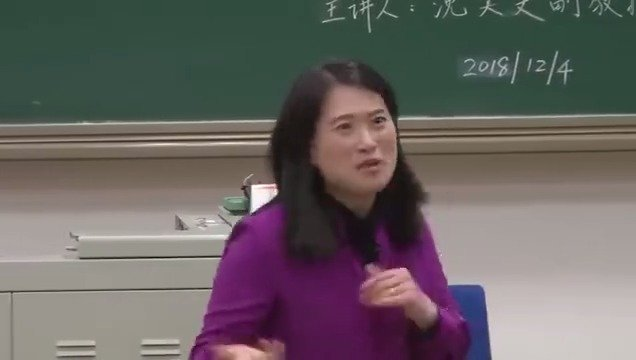
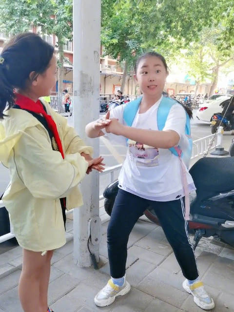

沈教授自称是偏保守的女性主义者，她关于爱情，婚姻，自我，亲密关系的观点，深以为然。感觉我现在也是偏保守。@人间奇妙之旅:复旦教授沈奕斐讲座：《为什么脱单这么难》，非常精彩，马住慢慢听！ 人间奇妙之旅的微博视频  11万次播放 1:37:53
才意识到，豫剧总是有股喜气洋洋的劲儿//@我们的奋斗:牛逼哈哈哈哈哈//@sleepsheep6:可爱//@楚惜刀://@半叶新柳初酿酒:好朋友这架势，也有一段啊@卷公子:#连鼻孔都是戏# #路边唱戏的女孩# 有趣的灵魂 卷公子的微博视频  225万次播放 00:42

 //@英文名字叫索菲亚:不穿内衣真的特别舒服。我不知道以前我怎么会专门选那种钢圈还挤沟的内衣，就是脑子不怎么清醒吧。
//@英文名字叫索菲亚:不穿内衣真的特别舒服。我不知道以前我怎么会专门选那种钢圈还挤沟的内衣，就是脑子不怎么清醒吧。